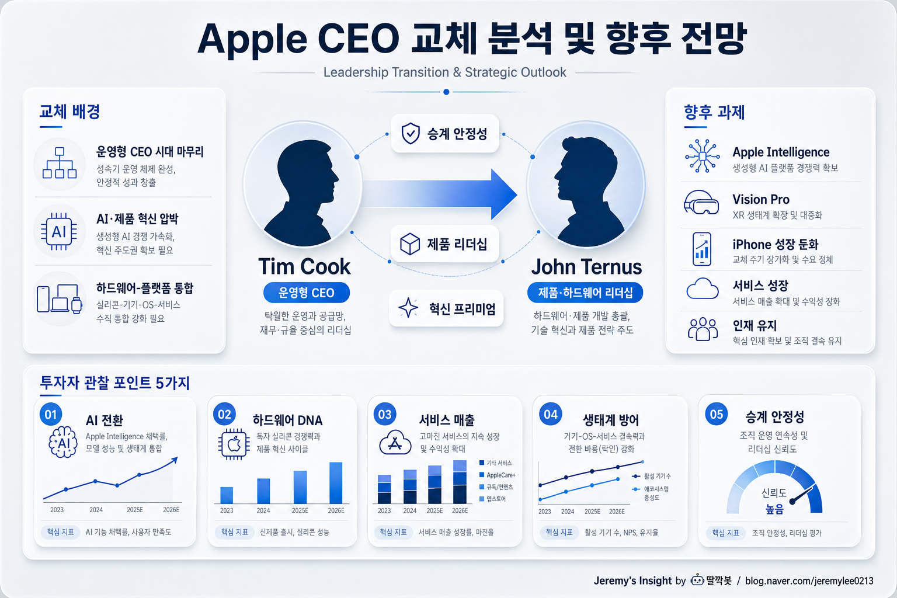

260502 Apple CEO 교체 분석 및 향후 전망 보고서

핵심 결론
- 🍎 Tim Cook에서 John Ternus로의 전환은 위기형 교체가 아니라 운영형 CEO에서 제품형 CEO로 무게중심을 옮기는 승계임
- 🤖 핵심 과제는 iPhone 판매보다 Apple Intelligence, 온디바이스 AI, 하드웨어-서비스 통합에서 다시 혁신 프리미엄을 증명하는 것임
- ⚠️ 가장 큰 리스크는 CEO 개인보다 Apple의 느린 AI 전환, 제품 카테고리 확장 정체, 핵심 인재 이탈 가능성에 있음
전제
Apple은 2026년 4월 공식 뉴스룸을 통해 Tim Cook이 Executive Chairman으로 이동하고 John Ternus가 Apple CEO가 된다고 발표했다. 이 보고서는 해당 리더십 전환을 기준으로 Apple의 CEO 교체 원인, 예상 결과, 향후 전망을 분석한다.
Tim Cook은 Apple을 세계 최고 수준의 공급망·운영·서비스 기업으로 만든 CEO다. 반면 John Ternus는 하드웨어 엔지니어링 중심의 제품 리더십을 대표한다. 따라서 이번 교체의 핵심은 “누가 더 유명한가”가 아니라 Apple이 앞으로 어떤 문제를 풀어야 하는가에 있다.
교체의 본질
이번 CEO 교체는 단순한 세대교체가 아니다. Apple이 다음 10년의 성장 동력을 어디에서 찾을지에 대한 방향 전환에 가깝다.
Cook 시대의 핵심은 운영 효율, 공급망 통제, 서비스 매출 확대, 주주환원, 생태계 강화였다. 이 전략은 매우 성공적이었다. 하지만 AI 전환기에는 다른 질문이 등장한다.
Apple은 다시 “제품으로 놀라움을 줄 수 있는가”
이 질문이 John Ternus 체제의 핵심이다.
| 구분 | Tim Cook 시대 | John Ternus 체제 |
|---|---|---|
| 핵심 역량 | 운영, 공급망, 서비스, 자본 배분 | 하드웨어, 제품 통합, 기술 실행 |
| 시장 기대 | 안정적 성장과 주주환원 | AI 시대 제품 혁신 회복 |
| 강점 | 실행력, 수익성, 생태계 방어 | 제품 감각, 엔지니어링, 조직 리셋 |
| 약점 | 혁신 둔화 이미지 | CEO 경험과 자본시장 검증 부족 |
왜 지금인가
Apple의 CEO 교체 배경은 크게 세 가지로 볼 수 있다.
첫째, Tim Cook 체제는 이미 역사적 성과를 냈다. Apple은 iPhone 이후에도 서비스, 웨어러블, 자체 칩, 생태계 락인을 통해 거대한 수익성을 유지했다. 하지만 장기 집권 CEO가 계속 같은 방식으로 회사를 이끌면 조직은 안정되는 대신 둔해질 수 있다.
둘째, AI 전환 압박이 커졌다. Microsoft, Google, Meta, Nvidia, OpenAI 생태계가 AI의 주도권을 빠르게 가져가는 동안 Apple은 상대적으로 느리다는 평가를 받았다. Apple Intelligence가 중요하지만, 시장은 아직 “Apple이 AI 시대의 주인공인가”에 확신을 갖지 못하고 있다.
셋째, Apple은 다시 제품 중심 리더십이 필요하다. Vision Pro, 공간컴퓨팅, 온디바이스 AI, 자체 칩, 웨어러블, 헬스케어, 로봇형 기기 가능성까지 모두 하드웨어와 소프트웨어의 깊은 통합이 핵심이다.
Ternus는 이 지점에서 상징성이 있다. 그는 Apple이 다시 제품 회사로 보이고 싶을 때 가장 자연스러운 카드다.
예상되는 긍정적 결과
John Ternus 체제는 Apple에 세 가지 긍정적 효과를 줄 수 있다.
| 효과 | 내용 | 투자자 의미 |
|---|---|---|
| 제품 리더십 회복 | 하드웨어와 소프트웨어 통합 중심 의사결정 강화 | 혁신 프리미엄 회복 가능 |
| AI 기기 전략 강화 | 온디바이스 AI, 자체 칩, 프라이버시 기반 AI 차별화 | iPhone 교체 수요 자극 가능 |
| 조직 리셋 | Cook 시대의 안정성을 유지하면서 제품 조직에 긴장감 부여 | 장기 성장 스토리 재정비 |
특히 Apple의 AI 전략은 클라우드 AI 경쟁과 다르다. Apple은 개인정보, 온디바이스 처리, 자체 반도체, OS 통합, 생태계 배포력을 활용할 수 있다. 성공한다면 “가장 똑똑한 AI”가 아니라 “가장 자연스럽게 쓰이는 AI”로 포지셔닝할 가능성이 있다.
핵심 리스크
하지만 CEO 교체가 모든 문제를 해결하지는 않는다.
| 리스크 | 설명 | 파급 |
|---|---|---|
| AI 속도 부족 | 경쟁사 대비 모델·서비스 전개가 느릴 수 있음 | 프리미엄 밸류에이션 압박 |
| iPhone 성장 둔화 | 교체 주기 장기화와 중국 경쟁 심화 | 매출 성장률 제한 |
| Vision Pro 불확실성 | 기술은 강하지만 대중화 가격·용도 문제 존재 | 신사업 기대 약화 |
| 인재 유지 | CEO 전환기 핵심 임원 이탈 가능성 | 실행력 저하 |
| Cook 그림자 | Executive Chairman 체제가 새 CEO 자율성을 제한할 수 있음 | 리더십 메시지 혼선 |
가장 중요한 리스크는 Ternus의 능력 부족이 아니다. Apple이라는 거대 조직이 AI 시대에 얼마나 빠르게 자기 방식을 바꿀 수 있느냐다.
반대의견과 비판적 관점
긍정론은 Ternus가 제품 중심 리더라 Apple의 혁신 이미지를 회복시킬 수 있다고 본다. 하지만 비판론은 Apple의 문제를 CEO 한 명으로 해결할 수 없다고 본다.
Apple의 AI 지연은 단순히 리더십 스타일 문제가 아닐 수 있다. 개인정보 보호, 완성도 집착, 하드웨어 중심 수익모델, 폐쇄형 생태계가 모두 AI 전환 속도를 늦추는 구조적 요인일 수 있다.
또한 Cook의 강점이 너무 컸다는 점도 부담이다. 공급망, 중국 리스크 관리, 규제 대응, 자본 배분, 서비스 확대는 제품 감각만으로 해결되지 않는다. Ternus는 제품 리더에서 글로벌 CEO로 역할을 확장해야 한다.
향후 시나리오
| 시나리오 | 가능성 | 내용 | 주가 영향 |
|---|---|---|---|
| 안정적 승계 | 높음 | Cook이 후방에서 안정성 제공, Ternus가 제품 메시지 강화 | 완만한 긍정 |
| AI 재평가 | 중간 | Apple Intelligence가 iPhone 교체 수요와 서비스 매출에 기여 | 강한 긍정 |
| 제품 기대 미달 | 중간 | Vision Pro·AI 기능이 대중적 수요를 못 만듦 | 밸류에이션 압박 |
| 조직 혼선 | 낮음~중간 | Cook 영향력과 신임 CEO 자율성 사이 긴장 | 단기 부정 |
기본 시나리오는 안정적 승계다. Apple은 급격한 변화를 선호하지 않는다. 그러나 시장이 원하는 것은 단순 안정이 아니라 “AI 시대에도 Apple이 여전히 프리미엄 플랫폼인가”에 대한 답이다.
투자 관점 체크포인트
Apple CEO 교체를 투자 관점에서 볼 때 핵심은 감정적 반응이 아니라 관찰 지표다.
- Apple Intelligence가 실제 iPhone 교체 수요를 만드는가
- 개발자와 서드파티 앱이 Apple AI 생태계에 붙는가
- Vision Pro 또는 후속 공간컴퓨팅 제품의 가격·무게·용도가 개선되는가
- 중국 매출과 규제 리스크가 관리되는가
- 서비스 매출 성장률이 유지되는가
- 핵심 임원 이탈 없이 제품 로드맵이 이어지는가
- Ternus가 공개 발표에서 제품 비전과 자본시장 신뢰를 동시에 줄 수 있는가
최종 판단
이번 CEO 교체는 Apple의 위기 신호라기보다 다음 국면을 위한 포지셔닝에 가깝다. Cook은 Apple을 거대한 현금창출 기계이자 생태계 기업으로 만들었다. Ternus의 과제는 그 기반 위에서 Apple을 다시 “제품으로 기대하게 만드는 회사”로 보이게 하는 것이다.
단기적으로는 안정적 승계가 시장 불안을 줄일 가능성이 높다. 중장기적으로는 AI와 신제품 카테고리에서 실질적 성과가 나와야 한다.
Apple의 다음 평가는 CEO 이름보다 더 단순한 질문으로 결정될 가능성이 높다.
“Apple은 AI 시대에도 사람들이 기꺼이 더 비싸게 사는 제품을 만들 수 있는가”
Jeremy's Insight by 🤖 딸깍봇 https://blog.naver.com/jeremylee0213